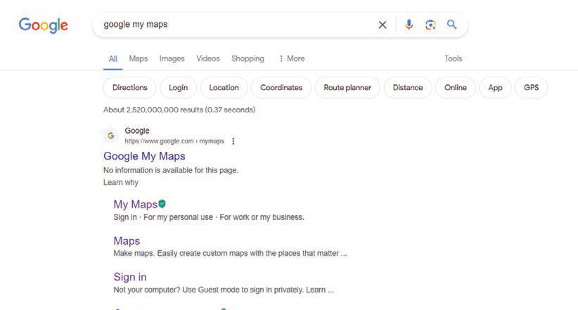

Mambo ya kuzingatia
Uchoraji wa ramani kidijitali kwa kutumia programu ya “Google My Maps” unazingatia mambo yafuatayo;
(a)Uwepo wa simujanja, tableti au kompyuta;
(b)hakikisha kifaa kimeunganishwa na mtandao;
(c)tambua eneo la kijiografia unalotaka kuchora katika ramani, mfano mipaka ya nchi, barabara au ziwa; na
(d)hakikisha una akaunti katika tovuti ya Google kwa kujisajili kwanza. Tumia anuani ya “Google My Maps” katika kujisajili. Anuani hii itakuruhusu kuunda ramani mwenyewe kwa kuchora maumbo na kuweka alama za vitu mbalimbali.
Hatua za uchoraji wa ramani kwa kutumia programu ya ‘Google My Maps’
Zifuatazo ni hatua za kufuata unapochora ramani kwa kutumia programu ya “Google My Maps.” Ramani ya hifadhi ya Wanyama ya Swaga Swaga iliyopo mkoa wa Dodoma imetumika kama mfano.
1. Tumia kivinjari chako, ingia katika tovuti ya ‘Google’ kisha andika ‘Google My Maps’ kama inavyowasilishwa katika Kielelezo namba 7, kisha bofya sehemu imeandikwa “My Maps”
